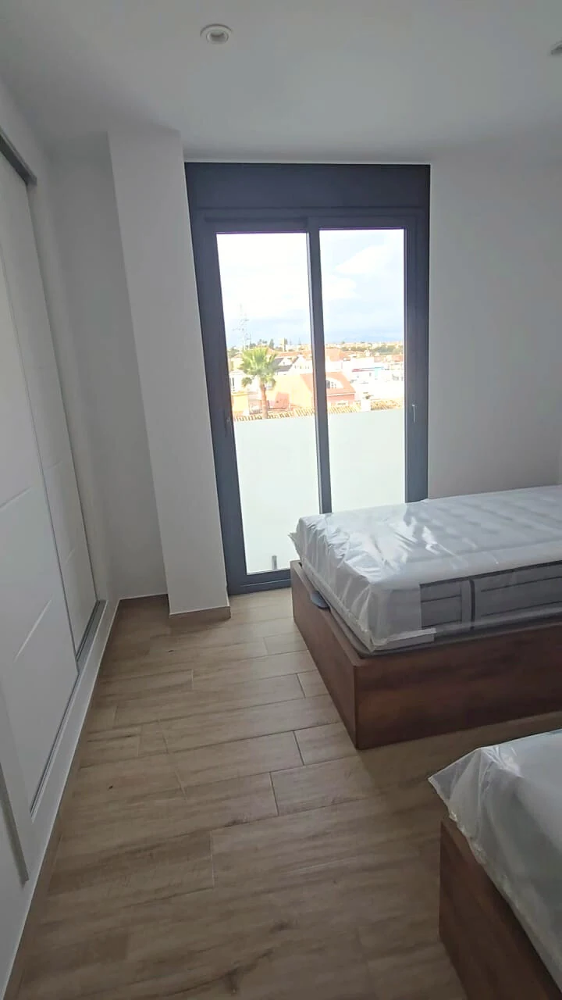

Tipo de obra, materiales delicados, puntos críticos y orden de intervención antes de empezar.
Volver a servicios
Radiant Clean · Servicio especializado
Después de la obra, el espacio vuelve a respirar.
Una limpieza post-obra bien hecha no es cuestión de fuerza: es método. Radiant Clean analiza, protege materiales delicados y retira polvo, restos y marcas hasta que la vivienda esté lista para enseñar, vender, alquilar o estrenar.
Viviendas y promociones
Trabajo por fases
Protección de acabados
Entrega lista para estrenar
Objetivo
Retirar todo lo que dejó la obra cuidando lo que acaba de estrenarse.
Trabajo escalonado de mayor a menor: retirada de gruesos, polvo fino, cristales y acabados.
Espacio preparado para enseñar, fotografiar, vender, alquilar o utilizar al día siguiente.
Para constructoras, reformistas y propietarios
La última fase de la obra también se nota al entrar.
La calidad percibida de una reforma se juega en los días posteriores a la entrega. Cristales con cemento, polvo en los rodapiés, marcas en grifos o juntas mal limpiadas hacen parecer que la obra no se cerró bien, aunque esté perfectamente acabada.
Radiant Clean se coordina con el equipo de obra para intervenir en el momento adecuado y dejar el inmueble preparado para su entrega, presentación o estreno.
- Evaluación del inmuebleEstado, residuos, materiales sensibles y puntos críticos a proteger.
- Plan de intervenciónPriorización de zonas, productos adecuados y orden por fases.
- Revisión de acabadosControl final para entregar el espacio realmente listo.
Qué incluye el servicio
Todo lo que se hace para dejarlo listo.
No es solo "barrer y fregar". Es una intervención por fases pensada para que el acabado de la obra se aprecie de verdad cuando entras por la puerta.
Quiero un presupuesto cerradoRetirada de gruesosRestos de obra, embalajes, recortes y residuos en superficies y suelos.
Eliminación de polvo finoPared a pared, rodapiés, marcos, persianas y rincones acumulados.
Cristalería y carpinteríaCristales, marcos de aluminio, ventanas, pomos y herrajes sin marcas.
Suelos y juntasTratamiento específico según material: porcelánico, madera, mármol o microcemento.
Cocina y bañosEncimeras, sanitarios, grifería y mamparas sin restos de pintura ni adhesivos.
Revisión finalRepaso completo antes de entregar: lo que tú no verías hasta días después.

Checklist Radiant
De obra terminada a espacio presentable.
- Retirada de polvo fino en superficies, rincones y zonas altas.
- Atención a suelos, ventanas, marcos y acabados delicados.
- Revisión a fondo de baños, cocina y zonas de paso.
- Limpieza final orientada a uso, venta, alquiler o estreno.
- Trabajo planificado para reducir tiempos sin perder calidad.
“Acabamos una reforma integral y el resultado fue excelente. La vivienda parecía recién estrenada y todo quedó preparado para la entrega. Repetiremos en el próximo proyecto.”
Antes de empezar
Lo que conviene saber sobre una limpieza post-obra.
Los materiales, el estado del inmueble y el plazo de entrega se valoran antes de diseñar la intervención.
Consultar por WhatsApp¿Cuánto tiempo lleva una limpieza post-obra?
Depende de la superficie, los materiales y el tipo de obra. Tras la valoración se entrega un plan de intervención con plazos claros.
¿Trabajáis sobre suelos delicados (madera, microcemento, mármol)?
Sí. Los productos y la técnica se adaptan al material y, cuando es necesario, se coordinan con el reformista para proteger los acabados y sus garantías.
¿Podéis entrar varias veces durante la obra?
Sí. En reformas grandes a veces conviene una limpieza intermedia y otra final. Lo coordinamos con el equipo de obra para que el resultado final llegue mucho más cuidado.
¿Cómo se factura el servicio?
Presupuesto cerrado tras visita o por metros y fases en proyectos grandes. Sin coste sorpresa al terminar: lo que acordamos en la propuesta es lo que pagas.